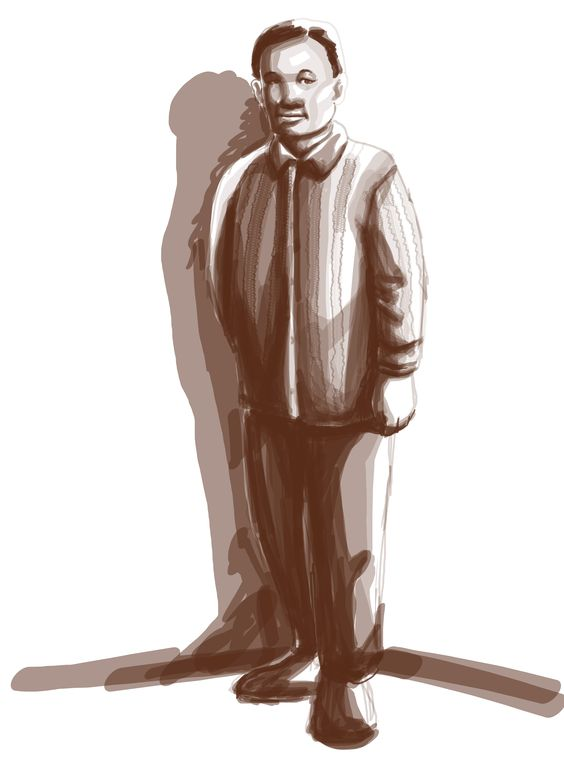
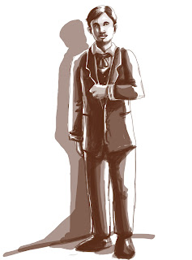
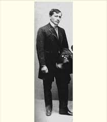
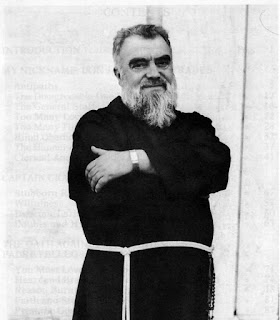

List of Noli me Tangere Characters |
| Image |
Character |
Description |
Image Source |
|  |
1. Don Santiago |
Don Tiago was one of the richest property owners in Manila, and had connections with the high-ranking clergy. Was a well respected socialite in the area, and was very well known. |
Source: Blitbot Studios. (n.d.). character design for Rizal’s Noli Me Tangere. pinterest.dk. https://www.pinterest.dk/pin/455215474808696600/ |
|  |
2. Don Rafael Ibarra |
The father of Ibarra, died before the opening pages of the story. Not much is known about this character. |
Source: philippin. (2017, December 1). don rafael ibarra noli me tangere. blogspot.com. https://philippinwoodpro.blogspot.com/2017/12/don-rafael-ibarra-noli-me-tangere.html |
|  |
3. Juan Crisóstomo Ibarra y Magsalin |
>A wealthy man who is half Filipino and half Spanish. He recently returned to the Philippines after studying abroad. The friars in his hometown are suspicious of him though, as his father had recently been executed due to being labeled as a heretic. Was excommunicated due to attempted murder of Father Dámaso. |
Source: Juan Crisostomo Ibarra Katangian. (2022, March 2). blogspot.com. https://katangiantoetra.blogspot.com/2022/03/juan-crisostomo-ibarra-katangian.html |
 |
4. María Clara |
A well-regarded women in San Diego, a childhood friend of Ibarra, was arranged to be married to him, though Father Damaso is displeased. Throughout the first few chapters, he tries to interfere with this arrangement, and ultimately succeeds. |
Source: Rizal, J. R. (n.d.). Maria Clara. en.wikipedia.org. https://en.wikipedia.org/wiki/Mar%C3%ADa_Clara |
|  |
5. Father Dámaso |
The godfather of María Clara, an arrogant priest. He dislikes Ibarra and tries to separate him from Maria. Ultimately, with the help of Father Salvi, he was able to succeed in his goal, and Ibarra was excommunicated. |
Source: padre damaso noli me tangere. (n.d.). blogspot.com. https://philippinwoodpro.blogspot.com/2017/11/padre-damaso-noli-me-tangere.html |
 |
6. Father Sibyla |
A priest in Binondo. Angered Father Dámaso during Ibarra's Welcome Party. He is a calm, skilled, and collected priest, as opposed to Father Dámaso |
Source:Byer, B. R. (2022, March 30). Differences Between Religious Titles Brother, Friar, Minister, and Monk. owlcation.com. https://owlcation.com/humanities/Differences-between-Religious-Titles-Brother-Friar-Minister-and-Monk |